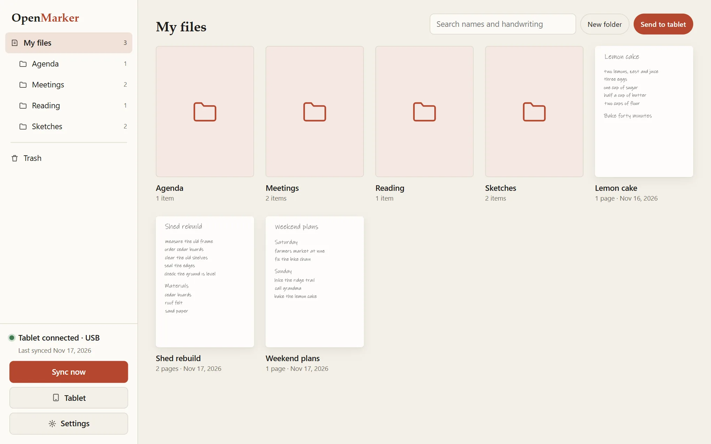

Early and experimental · v0.1
Your paper tablet, on your own terms
OpenMarker is an open, local-first companion app for e-ink paper tablets. It talks to the tablet directly over USB or Wi-Fi, keeps a copy of your documents on your own computer, and adds things the official app doesn't do.

What it does
Everything on the tablet, and a few things it can't do alone
The library opens in your browser. Everything in it is also available as a command.
-
Local sync
Copies the tablet's documents to a mirror folder on your computer over SSH. No cloud account is involved.
-
Finds the tablet by itself
Notices the tablet coming online over USB or Wi-Fi, follows it when its Wi-Fi address changes, and can sync as soon as it appears. With automatic sync on, a change made on the tablet shows in the browser a few seconds later.
-
Library in your browser
Folders, thumbnails, a page viewer and search across document names. Works in light and dark, on wide and narrow screens.
-
Handwriting search and text
Search what you wrote, or convert a notebook to text. Uses the handwriting recogniser built into Windows, fed with your actual pen strokes.
-
Version history
Every sync keeps a snapshot. Any earlier version of a document can be restored to the tablet as a copy.
-
Export
PDF with your ink over the original pages, plain text, or Markdown notes written into a folder of your choice after each sync.
-
Send to tablet
PDFs, EPUBs, web pages, pictures and a daily agenda page from your calendar, without restarting the tablet's app. Tablet asleep? What you send is kept and goes out when it next connects.
-
Picture import
Remove a plain backdrop, flatten a photo of paper, or cut out the subject with an AI model that runs on your computer.
-
Trace into real pen strokes
Turns a line drawing into a native notebook page of fineliner strokes that you can erase, select and draw over on the tablet.
-
Organise with a right-click
New folders, rename, move, trash and put back, straight from the browser: right-click a document, a folder or the empty space beside them.
-
Hooks
Run your own command for every document that changes, with the document's name, path and tags passed in.
-
AI, if you want it
Off by default. With your own API key: a chat about your notes, summaries, better handwriting to text, and more.
A quick tour
See it working
These are screenshots of the app showing a sample library. Select any of them to see it full size.
Handwriting becomes text you can copy
Open a notebook and choose Convert to text. Each page sits beside what was recognised, so it is easy to check one against the other.
- Recognition runs on your computer, from the pen strokes themselves.
- Copy everything, or download it as
.txtor.md. - Recognition makes mistakes, and needs Windows.
Search what you wrote by hand
One search box covers document names, handwriting and typed text. Matching pages are listed with the words highlighted on the page.
Go back to any earlier version
A version is kept each time a sync finds changes. Step back through them to see the document as it was, with the pages it had then, and restore one to the tablet as a copy. The current document is never overwritten.
Turn a drawing into real ink
Drop a picture onto the library to send it. A line drawing can be traced into pen strokes: it arrives as an ordinary notebook page that you can erase, select and draw over.
- Preview the result before anything is sent.
- For photos: remove a plain backdrop, flatten a photo of paper, or cut out the subject.
Your ink, over the original pages
PDFs are shown with your highlights and margin notes in place. Export PDF gives you one file with the ink laid over the original pages.
Today's agenda, ready to write on
Point OpenMarker at a calendar (an .ics file or address) and it sends a page for today: your events with a box to tick, and ruled space for notes.
Right-click for everything
Every document and folder has a menu: open it, convert it to text, export it, rename it, move it or send it to the trash. Right-click the empty space to make a folder, send something or sync.
- The same menu opens from the keyboard's menu key and from the ⋯ button on each card, for touch screens.
- Things in the trash can be put back.
- With AI switched on, the menu also offers a summary, a better reading of the handwriting, and a chat about that document or folder.
Send now, deliver later
The tablet does not have to be awake. Send a file, a picture, a web page or an agenda page at any time; if the tablet can't be reached, OpenMarker keeps it and delivers it the next time the tablet connects.
- The sidebar shows how many documents are waiting. Open the list to see them or remove one.
- Delivery happens by itself, even with automatic sync switched off.
- Rename, move, trash and new folder still need the tablet connected.
AI, optional
Bring your own AI, or leave it off
AI is switched off until you turn it on under Settings › AI and enter your own Anthropic API key. Each feature runs only on what you point it at. The screenshots below show real replies about the sample library.
Summarise
A short summary and a list of actions for a document. Send it to the tablet as a page with boxes to tick.
Improve with AI
Reads the handwriting again, more accurately than the built-in recogniser, and feeds search. Works on macOS and Linux too.
Chat with your notes
Ask a question, then follow up. Replies appear as they are written, with links to the pages they rest on, and any reply can be sent to the tablet as a page. Right-click a document or folder to chat about just that.
Suggest names and folders
Proposes names for notebooks that have none, and folders to file them in. Nothing changes until you apply what you ticked.
Answer tagged pages
Write a question on the tablet, tag the page, and sync. The answer arrives as a document next to the notebook.
Chat with your notes
Ask a question in plain words, then follow up. The chat reads the recognised text of your notes and answers from it, saying so when the notes don't hold the answer.
- Replies appear as they are written, and you can stop one part-way.
- Each reply names the pages it rests on. Select one to open that page; closing it returns you to the chat.
- With AI switched on, the chat stays beside your library as a column on the right. Hide puts it away and the AI menu brings it back. In a narrow window it opens from the AI menu instead.
- Keep the chat to all your notes, one folder or one document.
- Send any reply to the tablet as a page.
- A conversation lives only in the open page. It is not saved.
A summary, and what to do next
Summarise reads a document's pages and gives a short summary with the actions it found. Send it to the tablet and it arrives as a page with a box to tick beside each action.
Summaries and answers go beside the document they belong to, or into a folder you name in Settings.
This is the one part that is not local. What you use a feature on (page pictures, or recognised text for questions) is sent to Anthropic's Claude API, and use is billed to your key. Nothing is sent until you use a feature. Your key is kept in a file on your computer.
Install
Up and running in three steps
There is nothing to install on the tablet. OpenMarker runs on your computer.
What you need
| A computer | Windows 10 or 11, or a Mac with Apple silicon on macOS 12 or later, for the installer. Anything with Python 3.12 can run it from source. |
An ssh client | Included with Windows 10 and later, macOS and Linux. |
| Developer mode | Switched on in the tablet's settings. See Set up your tablet. |
| Windows | Only for handwriting search and convert to text. Everything else works on every system. |
Early and experimental. It is developed against one device, a Paper Pro on firmware 3.29, on Windows. Other devices, firmware versions and operating systems are untested. It writes to the tablet's storage, so keep cloud sync or another backup of anything you care about.
-
Install OpenMarker
Download the installer from the latest release. Python and every library are inside it.
- Windows: run the setup program. It installs for your account only and never asks for administrator rights. The installer is not signed, so Windows may say it protected your PC: choose More info, then Run anyway.
- Mac: open the disk image and drag OpenMarker onto Applications. The app is not signed by Apple, so the first time, allow it under System Settings › Privacy & Security › Open Anyway.
Starting OpenMarker opens your library in the browser. It keeps running in the background, with an icon in the notification area or menu bar to open or quit it.
Or run it from source
git clone https://github.com/MuchDevSuchCode/OpenMarker.git cd OpenMarker launch # macOS or Linux: ./launch.shNeeds Python 3.12 or newer. The first run creates a private Python environment in
.venvand installs OpenMarker into it, which takes a few minutes. After that it starts straight away and openshttp://127.0.0.1:8737/in your browser. -
Authorise this computer on the tablet
Choose Set up tablet in the sidebar and enter the tablet's password. Once only, with the tablet plugged in by USB and awake. The details are in Set up your tablet.
-
Press Sync now
Your documents are copied to your computer, indexed for search, and a first snapshot is kept for version history.
Set up your tablet
Configuring the device
Three things are needed on the tablet, once. Two more are optional and make daily use nicer.
Turning on developer mode resets the tablet. Let cloud sync finish first, and check your documents are safe in the cloud. They come back when you sign in again.
-
Turn on developer mode
Developer mode is what lets a computer reach the tablet over SSH. Switch it on in the tablet's settings and follow the prompts. The tablet resets, so wait until cloud sync has finished before you start, then sign in again afterwards and let your documents return.
-
Find the tablet's SSH password
With developer mode on, the tablet shows its password at:
Settings › Help › About › Copyrights and licenses
You will type it once, in the next step. OpenMarker never stores it.
-
Authorise your computer
Plug the tablet in by USB, wake it, choose Set up tablet in OpenMarker's sidebar and enter the password. In a terminal,
launch setupdoes the same.- It asks for the tablet's SSH password one time.
- It creates a key for this computer and installs it on the tablet, so the password is not needed again.
- The key is kept at
openmarker/id_ed25519in your home folder. Treat it like a password. - It is safe to run again, for example if the key is ever rejected.
Over USB the tablet is always at the address
10.11.99.1. When the sidebar shows Tablet connected · USB, press Sync now. -
Allow Wi-Fi Optional
SSH over Wi-Fi is off on the tablet by default. To allow it, run this once while connected by USB:
ssh -i ~/openmarker/id_ed25519 root@10.11.99.1 rm-ssh-over-wlan onIn the Windows Command Prompt, write the key's location this way instead:
ssh -i %USERPROFILE%\openmarker\id_ed25519 root@10.11.99.1 rm-ssh-over-wlan onAfter the first connection OpenMarker finds the tablet on your network by the name it announces (mDNS), and follows it when its address changes. If your network blocks that, open Tablet in the sidebar and type the tablet's address into Wi-Fi address, for example
192.168.1.50. The name it looks for is shown there too, as Tablet name. -
Send without a restart Optional
Switch on USB web interface in the tablet's storage settings. New documents are then handed to the tablet's own upload service and appear while the tablet stays as it is.
With it off, OpenMarker writes the files directly and restarts the tablet's app, which blanks and locks the screen for a few seconds. Rename, move, trash and new folder always work that way.
-
Sync automatically Optional
Open Settings in the sidebar and switch on Sync automatically. While OpenMarker is running it then syncs as soon as the tablet appears on USB or Wi-Fi, and within a few seconds of anything changing on the tablet.
Everything in one Settings sheet
The options that matter day to day are together in Settings, at the bottom of the sidebar:
- Accounts: an optional sign-in. Each account is a separate person with their own tablet, library and settings, and with a sign-in in place OpenMarker can be reached from elsewhere through a tunnel such as ngrok.
Everything about the device itself is separate, in Tablet:
- Connection: the tablet's Wi-Fi address, the name it announces on your network, and setting it up again.
- On the tablet: its own name, when it sleeps and powers off, handedness and more, read from the tablet and saved back to it. Saving restarts the tablet's app.
- Advanced: shows every setting the tablet stores, as it is stored. Passwords and saved networks stay hidden.
- Sync: sync automatically in the background.
- Agenda page: the calendar to read events from.
- Markdown export: the folder to write notes into, and an optional tag.
- Where things go on the tablet: folders for agenda pages, AI summaries and AI answers.
- AI: off unless you switch it on and add a key; then the model, effort and other inference options.
Reference
Commands, settings and where things live
Command line
Everything in the browser is also a command. With the launcher, put the command after launch. launch <command> -h lists a command's options.
| Command | What it does |
|---|---|
ui | Open the library in your browser (the default). |
setup | Authorise this computer on the tablet. |
pull | Copy the tablet's documents to the mirror, then index and snapshot. |
ls --mirror | List documents and folders. |
search <words> | Search handwriting and typed text. |
export <document> | Export as PDF; --text for text, --markdown DIR for notes. |
send <file or address> | Send a PDF, EPUB, picture or web page. --as-ink traces a drawing into pen strokes. |
agenda | Send today's agenda page. |
Settings
Most of these can be changed in Settings and Tablet in the app. They are kept in openmarker/config.json in your home folder. A full example:
{
"auto_sync": true,
"wifi_host": "192.168.1.50",
"tablet_name": "my-tablet",
"calendar": "https://example.com/calendar.ics",
"markdown_dir": "D:/Notes",
"markdown_tag": "export",
"hooks": [{ "run": "python my_script.py" }]
}| Key | Meaning |
|---|---|
wifi_host | The tablet's last known Wi-Fi address. Kept up to date automatically. |
tablet_name | The name the tablet announces on the network. It is looked up as name.local when the address changes, and learned on first connection. |
auto_sync | Sync in the background while OpenMarker is running. |
calendar | An .ics file or address for the agenda page. |
markdown_dir | After each sync, export changed notebooks into this folder. |
markdown_tag | Only export documents carrying this tag. |
ai_enabled | Switch the AI features on. Off by default. |
ai_model | The Claude model to use; claude-opus-5-5 unless changed. |
ai_answer_tag | Answer pages carrying this tag after a sync. Empty: off. |
ai_effort | low, medium, high, xhigh or max. Unset: the model's own default. |
ai_max_tokens | The longest reply the model may write, in tokens (default 16000). |
ai_pages | Page pictures sent in one request (default 20). |
ai_picture_width | Width in pixels of the page pictures sent (default 1240). |
ai_fallback | Let a request the model declines pass to another Claude model (default on). |
agenda_folder | Folder on the tablet for agenda pages (default Agenda; empty for the top level). |
ai_summary_folder | Folder on the tablet for AI summaries. Unset: beside the document. |
ai_answer_folder | Folder on the tablet for AI answers. Unset: beside the page that asked. |
hooks | Commands to run for every changed document. Each receives OPENMARKER_DOC_ID, OPENMARKER_NAME, OPENMARKER_PATH, OPENMARKER_TAGS and OPENMARKER_MIRROR. |
Where your data lives
Everything stays in the openmarker folder in your home directory.
| Path | Contents |
|---|---|
mirror/ | The copy of the tablet's documents. |
history/ | Snapshots for version history. |
outbox/ | Documents sent while the tablet was away, until they are delivered. |
index.db | Recognised handwriting, for search. |
config.json | Settings. |
id_ed25519 | The SSH key that unlocks your tablet. Treat it like a password. |
anthropic_key | Your Anthropic API key, if you saved one for the AI features. Treat it like a password. |
known_hosts | Your tablet's identity, so nothing else is mistaken for it. |
accounts.json | The accounts, if you added any: names, password hashes and signed-in browsers. Deleting it turns accounts off. |
accounts/<id>/ | The same files for each account after the first. |
Privacy
Local first, and it means it
The web page is served only to this computer (127.0.0.1) and nothing is sent to any outside service. If you add accounts you can choose to reach it from elsewhere through a tunnel; until there is an account, anything arriving that way is refused. The exceptions are things you ask for: fetching a web page or calendar you point it at, a one-time model download (about 180 MB) the first time you use the AI cut-out, and, only if you switch them on, the AI features.
The tablet is recognised by its own key, whatever address it has today, so another device that happens to have the same address is never mistaken for it.
How it works
No magic, just files
The tablet stores each document as a handful of files named after a random id: its name and folder, its page list, the original PDF or EPUB, and one file of pen strokes per page.
OpenMarker reads that store over SSH, compares file hashes with its mirror, and copies what changed. Pages are drawn from the stroke files, and the same strokes are what the handwriting recogniser reads.
Help
Troubleshooting and limits
The sidebar says “Tablet not connected”
Wake the tablet: it drops off the network while asleep. On USB, check the cable carries data and that developer mode is on. On Wi-Fi, check that SSH over Wi-Fi has been allowed (step 4 above) and that the computer and tablet are on the same network.
Sync fails, or the key is rejected
Open Tablet in the sidebar and choose Set up the tablet again, with the tablet on USB. It is safe to repeat. A software update or a reset on the tablet can remove the installed key.
It doesn't find the tablet on Wi-Fi
Some networks block the name lookup (mDNS) that OpenMarker uses. Open Tablet in the sidebar and type the tablet's address into Wi-Fi address. You can read the address from the tablet's Wi-Fi settings.
The tablet's screen blanks when I send something
That is the tablet's app restarting. Switch on USB web interface in the tablet's storage settings and new documents arrive without a restart. Rename, move, trash and new folder always restart the app.
I sent something while the tablet was asleep
It was kept. The sidebar shows “waiting to send”, and the document goes to the tablet the next time it connects. If one keeps failing, the list says why; press Sync now to try it again, or remove it.
The chat says there is no recognised text
The chat reads text, not page pictures. Open the notebook and choose Convert to text, or right-click it and choose Read the handwriting with AI, then ask again.
Handwriting search finds nothing
Recognition uses the recogniser built into Windows. On macOS and Linux only typed text is searched. On Windows, sync once so pages are indexed.
Known limits
- Typed text on notebook pages is laid out approximately.
- Traced drawings suit line art, not photographs.
- Not built yet: custom templates, a cloud-free sync server, live screen view.
- No licence has been chosen yet, so the usual open-source permissions are not granted until one is added.